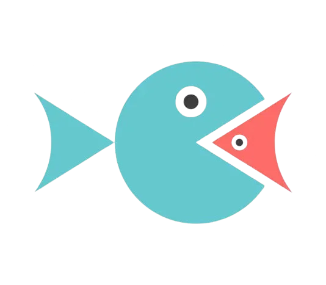
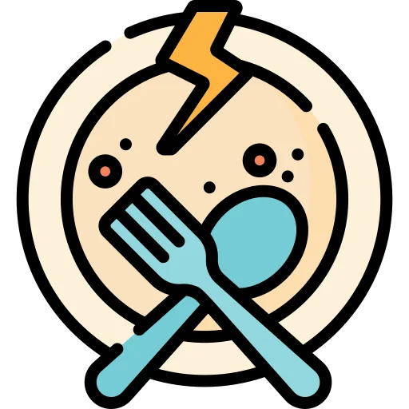
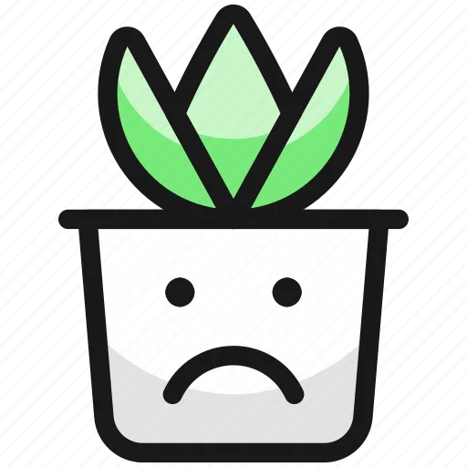
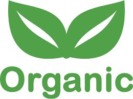

Animals eat each other in nature 
This is true. However, when a wolf hunts a rabbit or a lion hunts a gazelle, they do so out of necessity: they could not survive by eating grass. For us, on the other hand, eating animals is only an option: we can survive perfectly well without them. If we can avoid killing animals through our food, why not do it?
Humans are at the top of the food chain 🔝
It is true that we are currently in a position of power above any other animal species, and that we have the means to breed, exploit and kill them as we wish. However, the mere fact that we have this power does not give us the moral justification to exercise it.
The life of a person is worth more than the life of an animal 
It is not necessary to put the life of an animal on the same level as the life of a person in order to decide not to eat animals. It is enough to consider that their life or suffering is worth more than a sandwich or a hamburger.
You cannot survive without eating meat/eggs/dairy 
All the nutrients found in meat, eggs and dairy can also be obtained from other sources. In other words, we can get all the nutrients we need without eating animals. The American Academy of Nutrition and Dietetics, the world's largest professional nutritionist organisation, states that 100% plant-based diets are suitable for all stages of life, including infancy and pregnancy.
Eating vegan is expensive
It is true that veggie burgers or cheeses are often more expensive than their animal counterparts. However, the vast majority of plant-based products are significantly cheaper than meat, eggs or cheese. Vegetables, pulses, rice, pasta, bread, cereals, fruit, tubers... the cheapest foods are all plant-based.
Plants can also feel pain 
One of the main functions of consciousness is to enable flexible and context-dependent behaviour. Given plants' limited capacity for movement and action, it is hard to think of situations where being endowed with consciousness would give them a competitive advantage. Considering that consciousness is an energetically costly process, it seems unlikely that natural selection would have selected for self-aware plants.
However, if we assume the possibility of plants feeling pain, a plant diet would allow far fewer plants to suffer than an omnivorous diet. Farm or farmed animals need to eat plants or other animals to grow and the conversion process from plant food to animal food is very inefficient. For example, to obtain 1kg of pork, the pig must be fed more than 6kg of vegetables.
What if I eat organic meat/eggs? 
In some areas there may be open farms where the animals live outdoors.
It is clear that, in these particular cases, the living conditions of the animals are better than on a conventional farm and that they suffer less throughout their lives. However, the production of meat, eggs or dairy products always requires the killing of the animals from which we benefit. If you have ever owned a dog or cat with good living conditions, would you consider it ethical to slit its throat to eat its meat?
Sources 🔍
- Melina et al. (2016). Position of the Academy of Nutrition and Dietetics: Vegetarian Diets.
- Baars, Bernard J. (1988). In Cognitive Theory of Consciousness. Cambridge University Press.
- Alexander et al. (2016). Human appropriation of land for food: the role of diet. Global Environmental Change, 41, 88-98.